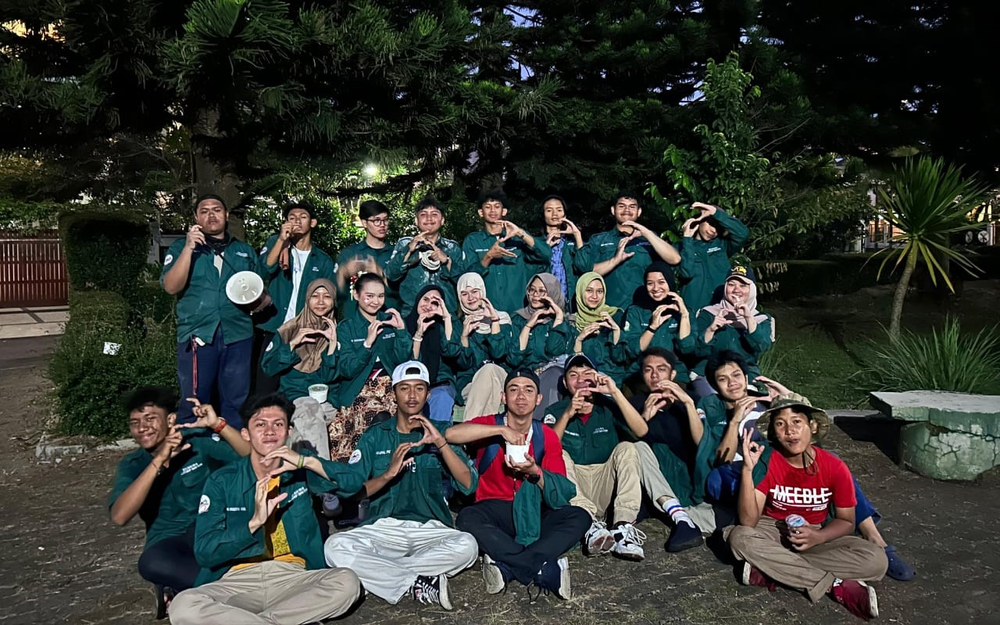
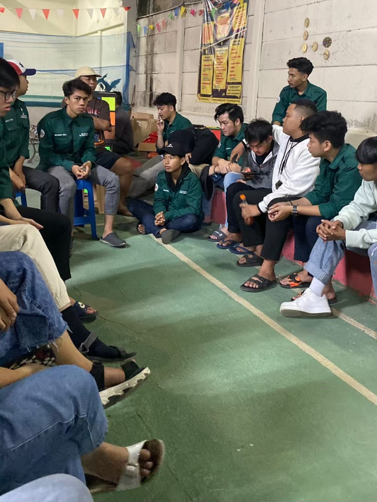

Karang Taruna


Deskripsi Kegiatan
Saya mengikuti organisasi Karang Taruna di tempat tinggal saya. Pada kegiatan ini, saya dan teman-teman karang taruna memiliki tugas untuk menjadi panita penyelanggara pada beberapa acara di lingkungan tempat tinggal saya, di antaranya yaitu pekan olahraga, perlombaan 17 agustus, dan malam puncak.
Selama menjadi bagian dari organisasi ini, saya dan teman-teman bekerja sama dalam menyusun rencana, mempersiapkan kebutuhan acara, dan memastikan setiap kegiatan berjalan lancar. Kami melakukan berbagai rapat untuk membahas konsep acara, pembagian tugas, serta mempersiapkan berbagai keperluan seperti tempat, peralatan, dan perlengkapan acara lainnya. Selain itu, kami juga secara langsung terlibat dalam proses pelaksanaan, mulai dari pembukaan hingga penutupan acara.
Setelah kegiatan selesai, kami selalu meluangkan waktu untuk melakukan evaluasi bersama. Pada sesi evaluasi ini, kami saling memberi masukan terkait kinerja masing-masing dan membahas hal-hal yang dirasa kurang selama pelaksanaan kegiatan. Evaluasi ini sangat bermanfaat bagi kami untuk memperbaiki kelemahan dan menjadi pelajaran berharga agar di kegiatan berikutnya kami dapat bekerja dengan lebih baik dan efisien.
Penerapan Sila
 Persatuan Indonesia
Persatuan Indonesia
Mengikuti organisasi Karang Taruna di lingkungan tempat tinggal saya, bersama teman-teman Karang Taruna saya bersama teman-teman saya memiliki tugas menjadi panitia untuk beberapa acara, seperti pekan olahraga, lomba 17 Agustus, dan malam puncak. Kegiatan ini termasuk dalam Sila ke-3, “Persatuan Indonesia”, karena dalam menjalankan tugas ini kami berusaha untuk mengajak warga ikut serta dan menjaga kebersamaan di lingkungan.
Lewat kegiatan-kegiatan ini, saya dan teman-teman Karang Taruna berupaya mempererat hubungan antarwarga. Kebersamaan dalam merencanakan dan menjalankan acara mencerminkan semangat persatuan dan gotong royong. Ini adalah bagian penting dari Persatuan Indonesia, karena kami ikut membangun lingkungan yang kompak dan saling mendukung, yang sesuai dengan nilai-nilai Pancasila.
 Kerakyatan yang dipimpin oleh hikmat kebijaksanaan dalam
permusyawaratan perwakilan
Kerakyatan yang dipimpin oleh hikmat kebijaksanaan dalam
permusyawaratan perwakilan
Penerapan Sila ke-4 Pancasila, tercermin dalam kegiatan Karang Taruna melalui proses musyawarah dan pengambilan keputusan bersama yang dilakukan secara demokratis. Sebelum melaksanakan berbagai acara, saya dan anggota Karang Taruna lainnya mengadakan rapat untuk membahas rancangan kegiatan. Dalam rapat-rapat tersebut, setiap anggota diberi kesempatan untuk menyampaikan ide, masukan, dan pendapatnya mengenai konsep acara, kebutuhan teknis, serta pembagian tugas. Proses musyawarah ini dilakukan dengan penuh kebijaksanaan, di mana semua usulan dan kritik diterima secara terbuka serta dipertimbangkan secara adil. Kami bekerja sama untuk mencapai keputusan yang dianggap terbaik bagi kesuksesan acara dan kenyamanan semua pihak yang terlibat. Melalui pengalaman ini, kami belajar pentingnya nilai demokrasi dan kerjasama dalam mengambil keputusan yang mengutamakan kepentingan bersama, sehingga setiap kegiatan yang kami laksanakan dapat berjalan dengan baik dan dirasakan manfaatnya oleh seluruh warga.